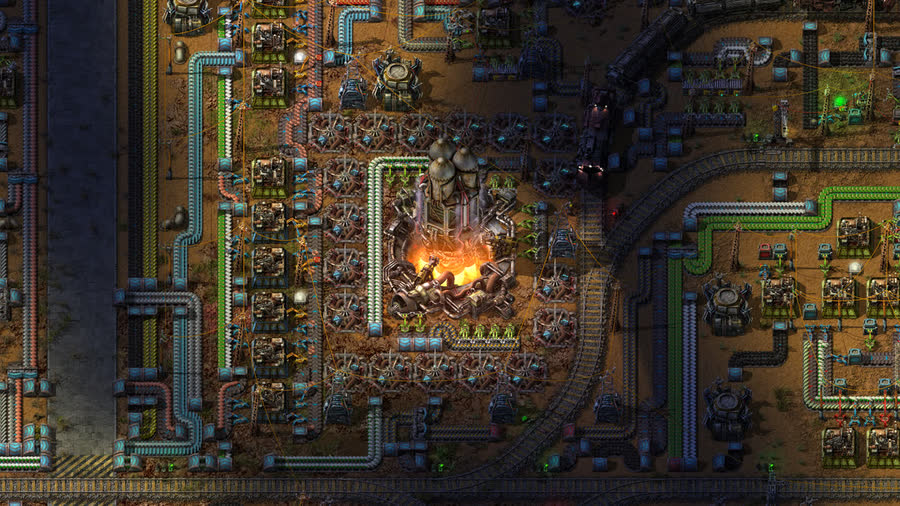

Factorio

Um jogo de automação onde o desafio central é projetar cadeias de produção e logística eficientes.
Créditos da imagem: Wube Software (press kit oficial)Em Factorio, o jogador chega sozinho a um planeta desconhecido e precisa construir, do zero, toda uma indústria: extrair matérias-primas, transportá-las por esteiras e trens, processá-las em fábricas e transformá-las em produtos cada vez mais complexos. Não existe um objetivo único de "conectar rotas" como no Mini Metro ou no OpenTTD — aqui a logística é interna, dentro da própria fábrica, mas os conceitos são os mesmos: balancear a produção com a demanda, evitar gargalos, dimensionar a capacidade de transporte e planejar o layout para crescer sem transformar tudo num caos.
É um jogo particularmente bom para visualizar, na prática, temas como takt time, gargalos de produção, throughput e balanceamento de linha — conceitos que também aparecem em metodologias como Lean e Six Sigma, só que aqui é possível literalmente ver o material fluindo (ou travando) pelas esteiras em tempo real.
O projeto é mantido pela desenvolvedora Wube Software e tem um demo gratuito disponível para quem quiser experimentar antes de decidir se compra o jogo completo.
Mais informações, incluindo o demo gratuito, no site oficial do jogo.
Factorio é o que mais se aproxima de conceitos que aplico no dia a dia de melhoria de processos: gargalo, buffer, takt time e balanceamento de linha ficam evidentes só de olhar a esteira travar ou o estoque intermediário se acumular. Ainda assim, é uma logística fechada dentro de uma única fábrica - não existe fornecedor externo com prazo de entrega variável, cliente com contrato e nível de serviço a cumprir, nem a variação real de demanda que costuma ser o que mais desorganiza uma operação. É uma ferramenta ótima para visualizar fluxo e gargalo na prática, mas resolve só metade do problema de uma cadeia de suprimentos real.